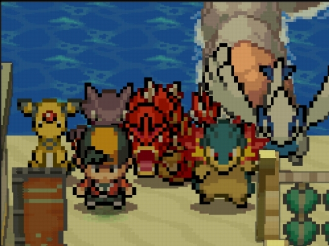

Hall da Fama do (futuro) campeão de Johto
Equipe de Pokémons usados por mim na Elite dos Quatro

Veja informações de cada um desses Pokémons:
Insígias
Juntos nós consquistamos todas as 8 insígias de Johto, o que nos permitiu
desafiar a Elite dos Quatro e o campeão da região.
Que são:
-
Insígnia Zephire
Conquistada na cidade de Violet.
-
Insígnia Colmeia
Conquistada na cidade de Azalea.
-
Insígnia da Planíce
Conquistada na cidade de Goldenrod.
-
Insígnia Névoa
Conquistada na cidade de Ecruteak.
-
Insígnia Tempestade
Conquistada na cidade de Cianwood.
-
Insígnia Mineral
Conquistada na cidade de Olivine.
-
Insígnia Geleira
Conquistada na cidade de Mahogany.
-
Insígnia Dragão
Conquistada na cidade de Blackthorn.
Encerramento
Finalização do jogo, após derrotar todos os desafios da região:
Créditos